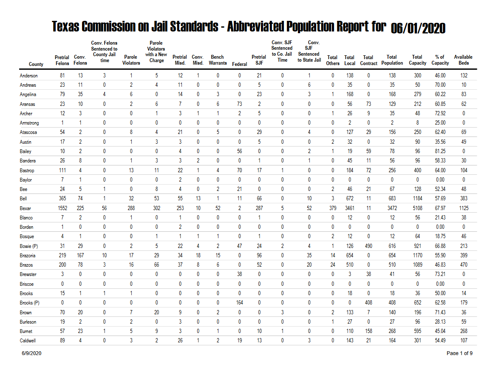
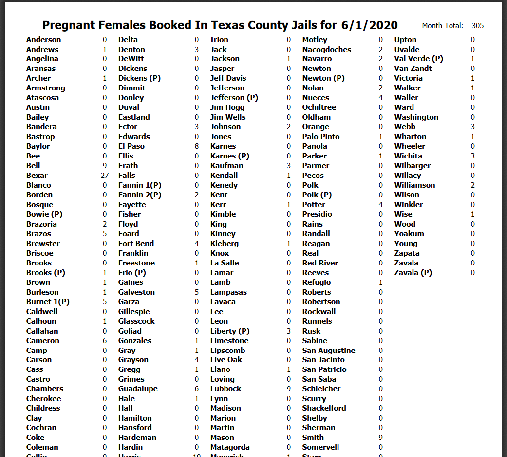
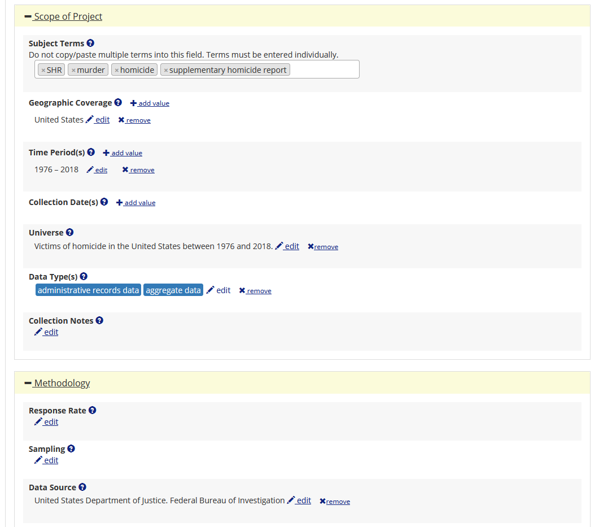

24 More scraping tables from PDFs
For this chapter you’ll need the following files, which are available for download here: AbbreRptCurrent.pdf and PregnantFemaleReportingCurrent.pdf.
In Chapter 23 we used the package pdftools to scrape tables on arrests/seizures from the US Customs and Border Protection that were only available in a PDF. Given the importance of PDF scraping, in this chapter we’ll continue working on scraping tables from PDFs. Here, we will use the package tabulizer which has a number of features making it especially useful for grabbing tables from PDFs.
One issue which we saw in Chapter 23 is that the table may not be the only thing on the page - the page could also have a title, page number, etc. When using pdftools we use regular expressions and subsetting to remove all the extra lines. Using tabulizer we can simply say (through a handy function) that we only want a part of the page, so we only scrape the table itself. For more info about the tabulizer package please see its site here.
24.1 Texas jail data
For this chapter we’ll scrape data from the Texas Commission on Jail Standards - Abbreviated Population Report. This is a report that shows monthly data on people incarcerated in jails for counties in Texas. This PDF is 9 pages long because of how many counties there are in Texas. Let’s take a look at what the first page looks like. If you look at the PDF yourself you’ll see that every page follows the format of the 1st page, which greatly simplifies our scrape. The data is in county-month units which means that each row of data has info for a single county in a single month. We know that because the first column is “County” and each row is a single county (this is not true in every case. For example, on page 3 there are the rows “Fannin 1(P)” and “Fannin 2(P),” possibly indicating that there are two jails in that county. It is unclear from this PDF what the “(P)” means.). For knowing that the data is monthly, the title of this document says “for 06/01/2020” indicating that it is for that date, though this doesn’t by itself mean the data is monthly - it could be daily based only on this data.
To know for sure that it is monthly data we’d have to go to the original source on the Texas Commission on Jail Standards website here. On this page it says that “Monthly population reports are available for review below,” which tells us that the data is monthly. It’s important to know the unit so you can understand the data properly - primarily so you know what kinds of questions you can answer. If someone asks whether yearly trends on jail incarceration change in Texas, you can answer that with this data. If they ask whether more people are in jail on a Tuesday than on a Friday, you can’t.
Just to understand what units our data is in we had to look at both the PDF itself and the site it came from. This kind of multi-step process is tedious but often necessary to truly understand your data. And even now we have questions - what does the (P) that’s in some rows mean? For this we’d have to email or call the people who handle the data and ask directly. This is often the easiest way to answer your question, though different organizations have varying speeds in responding - if ever.
Now let’s look at what columns are available. It looks like each column is the number of people incarcerated in the jail, broken down into categories of people. For example, the first two columns after County are “Pretrial Felons” and “Conv. Felons” so those are probably how many people are incarcerated who are awaiting trial for a felony and those already convicted of a felony. The other columns seem to follow this same format until the last few ones which describe the jails capacity (i.e. how many people they can hold), what percent of capacity they are at, and specifically how many open beds they have.

Now that we’ve familiarized ourselves with the data, let’s begin scraping this data using tabulizer. If you don’t have this package installed, you’ll need to install it using install.packages("tabulizer"). Then we’ll need to run library(tabulizer).
install.packages("tabulizer")library(tabulizer)The main function that we’ll be using from the tabulizer package is extract_tables(). In the parentheses we need to put the name of our PDF (in quotes). This function basically looks at a PDF page, figures out which part of the page is a table, and then scrapes just that table. As we’ll see, it’s not always perfect at figuring out what part of the page is a table so we can also tell it exactly where to look. You can look at all of the features of extract_tables() by running help(extract_tables).
data <- extract_tables(file = "data/AbbreRptCurrent.pdf")Normally we’d now look at the head() of our data object, but if we did that it would print out a very large amount of information. Instead, we’ll check how long our object is using length() which tells us how many elements a vector or list has. We’ll also check what type of data it is since different types of data (e.g. vector, data.frame) operate differently.
length(data)
#> [1] 18
is(data)
#> [1] "list" "vector"We learn that it is a list of length of 18, or has 18 elements in it. Why is this? We have 9 pages so it is reasonable that we would have 9 lists since we have one table per page, but we shouldn’t have 18 tables.
Back in Section 4.2.3 I said that lists are one of the data types that we don’t have to worry about as we don’t use them much in this book. That’s still true. Our data object is a list and we want to convert this to a data.frame as quickly as possible. The important thing to know when interacting with a list is that subsetting here uses two pairs of square brackets [[]] instead of one pair of square brackets for a normal vector.
Let’s look again at just the first table in our object, subsetting using [[1]].
data[[1]]
#> [,1] [,2] [,3] [,4] [,5] [,6]
#> [1,] "" "" "" "Conv. Felons" "" "Parole"
#> [2,] "" "" "" "Sentenced to" "" "Violators"
#> [3,] "" "" "" "County Jail" "" "with a New"
#> [4,] "" "Pretrial" "Conv." "" "Parole" ""
#> [5,] "" "" "" "time" "" "Charge"
#> [6,] "County" "Felons" "Felons" "" "Violators" ""
#> [,7] [,8] [,9] [,10] [,11] [,12]
#> [1,] "" "" "" "" "" "Conv. SJF"
#> [2,] "" "" "" "" "" "Sentenced"
#> [3,] "" "" "" "" "" "to Co. Jail"
#> [4,] "Pretrial" "Conv." "Bench" "" "Pretrial" ""
#> [5,] "" "" "" "" "" "Time"
#> [6,] "Misd." "Misd." "Warrants" "Federal" "SJF" ""
#> [,13] [,14] [,15] [,16] [,17] [,18]
#> [1,] "Conv." "" "" "" "" ""
#> [2,] "SJF" "" "" "" "" ""
#> [3,] "Sentenced" "" "" "" "" ""
#> [4,] "" "Total" "Total" "Total" "Total" "Total"
#> [5,] "to State Jail" "" "" "" "" ""
#> [6,] "" "Others" "Local" "Contract" "Population" "Capacity"
#> [,19] [,20]
#> [1,] "" ""
#> [2,] "" ""
#> [3,] "" ""
#> [4,] "% of" "Available"
#> [5,] "" ""
#> [6,] "Capacity" "Beds"The results from data[[1]] provide some answers. It has the right number of columns but only 6 rows! This is our first table so should be the entire table we can see on page 1. Instead, it appears to be just the column names, with 6 rows because some column names are on multiple rows. Here’s the issue, we can read the table and easily see that the column names may be on multiple rows but belong together, and that they are part of the table. tabulizer can’t see this obvious fact. It must rely on a series of rules to indicate what is part of a table and what isn’t.
For example, having white space between columns and thin black lines around rows tells it where each row and column is. Our issue is that the column names appear to just be text until there is a thick black line and (in tabulizer's mind) the table begins, so it keeps the column name part separate from the rest of the table. Now let’s look closer at the second element in our data object and see if it is correct for the table on page 1 of our PDF.
head(data[[2]])
#> [,1] [,2] [,3] [,4] [,5] [,6] [,7] [,8] [,9] [,10] [,11] [,12]
#> [1,] "Anderson" "81" "13" "3" "1" "5" "12" "1" "0" "0" "21" "0"
#> [2,] "Andrews" "23" "11" "0" "2" "4" "11" "0" "0" "0" "5" "0"
#> [3,] "Angelina" "79" "35" "4" "6" "0" "14" "0" "3" "0" "23" "0"
#> [4,] "Aransas" "23" "10" "0" "2" "6" "7" "0" "6" "73" "2" "0"
#> [5,] "Archer" "12" "3" "0" "0" "1" "3" "1" "1" "2" "5" "0"
#> [6,] "Armstrong" "1" "1" "0" "0" "0" "0" "0" "0" "0" "0" "0"
#> [,13] [,14] [,15] [,16] [,17] [,18] [,19] [,20]
#> [1,] "1" "0" "138" "0" "138" "300" "46.00" "132"
#> [2,] "6" "0" "35" "0" "35" "50" "70.00" "10"
#> [3,] "3" "1" "168" "0" "168" "279" "60.22" "83"
#> [4,] "0" "0" "56" "73" "129" "212" "60.85" "62"
#> [5,] "0" "1" "26" "9" "35" "48" "72.92" "0"
#> [6,] "0" "0" "2" "0" "2" "8" "25.00" "0"
tail(data[[2]])
#> [,1] [,2] [,3] [,4] [,5] [,6] [,7] [,8] [,9] [,10] [,11] [,12]
#> [24,] "Brooks" "15" "1" "1" "1" "0" "0" "0" "0" "0" "0" "0"
#> [25,] "Brooks (P)" "0" "0" "0" "0" "0" "0" "0" "0" "164" "0" "0"
#> [26,] "Brown" "70" "20" "0" "7" "20" "9" "0" "2" "0" "0" "3"
#> [27,] "Burleson" "19" "2" "0" "2" "0" "3" "0" "0" "0" "0" "0"
#> [28,] "Burnet" "57" "23" "1" "5" "9" "3" "0" "1" "0" "10" "1"
#> [29,] "Caldwell" "89" "4" "0" "3" "2" "26" "1" "2" "19" "13" "0"
#> [,13] [,14] [,15] [,16] [,17] [,18] [,19] [,20]
#> [24,] "0" "0" "18" "0" "18" "36" "50.00" "14"
#> [25,] "0" "0" "0" "408" "408" "652" "62.58" "179"
#> [26,] "0" "2" "133" "7" "140" "196" "71.43" "36"
#> [27,] "0" "1" "27" "0" "27" "96" "28.13" "59"
#> [28,] "0" "0" "110" "158" "268" "595" "45.04" "268"
#> [29,] "3" "0" "143" "21" "164" "301" "54.49" "107"We’re looking just at the head() and tail() to get the first and last six rows as otherwise we’d print out all 29 rows in that table. When you are exploring your own data, you’ll probably want to be more thorough and ensure that rows around the middle are also correct - but this is a good first pass. If you look at the output we just printed out and compare it to the PDF, you’ll see that the scrape was successful. Every row is where it should be and the columns are correct - unlike when using pdftools(), we have the results already in proper columns.
One thing to note is that this data isn’t in a data.frame format, it’s in a matrix. Matrices are the default output of extract_tables() though you can set it to output a data.frame by setting the parameter output = "data.frame". In our case we actually wouldn’t want that due to the issue of the column names. As shown below, outputting to a data.frame will automatically take the first row of data and convert that to column names. So now we have our first county as the column names, which is not correct. Note too that the function added “X” before the column names which are numbers. That’s because column names cannot start with a number so the function tries to fix it by adding the “X” to the start.
data <- extract_tables(file = "data/AbbreRptCurrent.pdf", output = "data.frame")
head(data[[2]])
#> Anderson X81 X13 X3 X1 X5 X12 X1.1 X0 X0.1 X21 X0.2 X1.2 X0.3 X138 X0.4
#> 1 Andrews 23 11 0 2 4 11 0 0 0 5 0 6 0 35 0
#> 2 Angelina 79 35 4 6 0 14 0 3 0 23 0 3 1 168 0
#> 3 Aransas 23 10 0 2 6 7 0 6 73 2 0 0 0 56 73
#> 4 Archer 12 3 0 0 1 3 1 1 2 5 0 0 1 26 9
#> 5 Armstrong 1 1 0 0 0 0 0 0 0 0 0 0 0 2 0
#> 6 Atascosa 54 2 0 8 4 21 0 5 0 29 0 4 0 127 29
#> X138.1 X300 X46.00 X132
#> 1 35 50 70.00 10
#> 2 168 279 60.22 83
#> 3 129 212 60.85 62
#> 4 35 48 72.92 0
#> 5 2 8 25.00 0
#> 6 156 250 62.40 69Let’s rerun the extract_tables() function, this time keeping it as outputting a matrix.
data <- extract_tables(file = "data/AbbreRptCurrent.pdf")Since the column names are the same on each page, we can set the names manually. There are 20 columns so this will be a lot of writing, but it’s simpler and quicker than trying to do it programmatically. Since each table will have the same column names, we’ll want to create a vector with the column names to use for every table. Following normal naming conventions, we’ll make everything lowercase and the only punctuation we’ll use is an underscore.
column_names <- c("county",
"pretrial_felons",
"conv_felons",
"conv_felons_sentence_to_county_jail_time",
"parole_violators",
"parole_violators_with_a_new_charge",
"pretrial_misd",
"conv_misd",
"bench_warrants",
"federal",
"pretrial_sjf",
"conv_sjf_sentenced_to_co_jail_time",
"conv_sjf_sentence_to_state_jail",
"total_others",
"total_local",
"total_contract",
"total_population",
"total_capacity",
"percent_of_capacity",
"available_beds")We can combine the results from this vector with that of the second table to have a complete table from page 1 of our PDF. We do this first by making the second element from our data object into a data.frame. Then we use names() and assign the column names to that of the vector of names we just made. Since this is the table from page 1 of the PDF, we’ll call the object page1_table. We’ll look just at the head() of our page1_table object.
page1_table <- data[[2]]
page1_table <- data.frame(page1_table)
names(page1_table) <- column_names
head(page1_table)
#> county pretrial_felons conv_felons
#> 1 Anderson 81 13
#> 2 Andrews 23 11
#> 3 Angelina 79 35
#> 4 Aransas 23 10
#> 5 Archer 12 3
#> 6 Armstrong 1 1
#> conv_felons_sentence_to_county_jail_time parole_violators
#> 1 3 1
#> 2 0 2
#> 3 4 6
#> 4 0 2
#> 5 0 0
#> 6 0 0
#> parole_violators_with_a_new_charge pretrial_misd conv_misd bench_warrants
#> 1 5 12 1 0
#> 2 4 11 0 0
#> 3 0 14 0 3
#> 4 6 7 0 6
#> 5 1 3 1 1
#> 6 0 0 0 0
#> federal pretrial_sjf conv_sjf_sentenced_to_co_jail_time
#> 1 0 21 0
#> 2 0 5 0
#> 3 0 23 0
#> 4 73 2 0
#> 5 2 5 0
#> 6 0 0 0
#> conv_sjf_sentence_to_state_jail total_others total_local total_contract
#> 1 1 0 138 0
#> 2 6 0 35 0
#> 3 3 1 168 0
#> 4 0 0 56 73
#> 5 0 1 26 9
#> 6 0 0 2 0
#> total_population total_capacity percent_of_capacity available_beds
#> 1 138 300 46.00 132
#> 2 35 50 70.00 10
#> 3 168 279 60.22 83
#> 4 129 212 60.85 62
#> 5 35 48 72.92 0
#> 6 2 8 25.00 0Looking at the results, we’ve done this correctly. The values are right and the column names are correct. We’ve done it for one page but now must add the remaining pages. We’ll do this through a for loop. We want to take the code we used above and loop through each of the tables we have. Since half of our tables are just the column names and not actual data, we need to skip those elements in our for loop. Luckily, our data follows a pattern where the first element is the column names from page 1, the second is the data from page 1, the third is the column names from page 2, the fourth is the data from page 2, and so on. So we need only every other value from 1 to 18, or every even number. We can get every other value using logical values, as shown in the next section, but since we only have 18 elements we’ll just create the simple vector ourselves: c(2, 4, 6, 8, 10, 12, 14, 16, 18).
For our for loop we can copy the code above but let’s change the object name from page1_table to temp as each iteration will be of a different page so page1_table doesn’t make sense.
for (i in c(2, 4, 6, 8, 10, 12, 14, 16, 18)) {
temp <- data[[i]]
temp <- data.frame(temp)
names(temp) <- column_names
}Running the above code runs our for loop successfully but doesn’t assign the output anywhere. It just runs one iteration, assigns it to temp, and then overwrites temp for the next iteration. What we really want is a single object which will end up having every single row of data from every page in one data.frame. To do this we make an empty data.frame by saying some object gets data.frame() without anything in the parentheses. And then for every iteration of the loop we add the data that is in temp to this empty data.frame (which will soon fill up with data).
By creating an empty data.frame at the start we avoid having to name any of the column names or say how many rows of data there will be. To add data to this data.frame each iteration we will use the function bind_rows() from dplyr which stacks data sets on top of each other. Let’s first look at a simple example of this before including it in our for loop. To use bind_rows() we put two (or more) data.frames as the parameters and it will return a single data set with all rows stacked together. Let’s create two data.frames that each have the rows of head(mtcars) as a demonstration.
library(dplyr)
#>
#> Attaching package: 'dplyr'
#> The following objects are masked from 'package:stats':
#>
#> filter, lag
#> The following objects are masked from 'package:base':
#>
#> intersect, setdiff, setequal, union
example1 <- head(mtcars)
example2 <- head(mtcars)
bind_rows(example1, example2)
#> mpg cyl disp hp drat wt qsec vs am gear carb
#> Mazda RX4...1 21.0 6 160 110 3.90 2.620 16.46 0 1 4 4
#> Mazda RX4 Wag...2 21.0 6 160 110 3.90 2.875 17.02 0 1 4 4
#> Datsun 710...3 22.8 4 108 93 3.85 2.320 18.61 1 1 4 1
#> Hornet 4 Drive...4 21.4 6 258 110 3.08 3.215 19.44 1 0 3 1
#> Hornet Sportabout...5 18.7 8 360 175 3.15 3.440 17.02 0 0 3 2
#> Valiant...6 18.1 6 225 105 2.76 3.460 20.22 1 0 3 1
#> Mazda RX4...7 21.0 6 160 110 3.90 2.620 16.46 0 1 4 4
#> Mazda RX4 Wag...8 21.0 6 160 110 3.90 2.875 17.02 0 1 4 4
#> Datsun 710...9 22.8 4 108 93 3.85 2.320 18.61 1 1 4 1
#> Hornet 4 Drive...10 21.4 6 258 110 3.08 3.215 19.44 1 0 3 1
#> Hornet Sportabout...11 18.7 8 360 175 3.15 3.440 17.02 0 0 3 2
#> Valiant...12 18.1 6 225 105 2.76 3.460 20.22 1 0 3 1The data that is printed out has 12 rows and in this example the first six and the last six rows are identical. bind_rows() took the second object in the parentheses (example2) and stacked it right below the last row in example1. In this case the columns are already in the same order but if they weren’t, bind_rows() is smart enough to arrange the columns in the second object to be the same as the first object.
Now we can run our for loop and create a single data set with every row from our 9 pages of data. We start by creating our empty data.frame and we’ll call that final. At the end of our loop we say that final gets bind_rows(final, temp) meaning that temp is stacked to the bottom of final every time the loop runs. We’ll end this code chunk by looking at head() and tail() of final to be sure it worked correctly.
final <- data.frame()
for (i in c(2, 4, 6, 8, 10, 12, 14, 16, 18)) {
temp <- data[[i]]
temp <- data.frame(temp)
names(temp) <- column_names
final <- bind_rows(final, temp)
}
#> New names:
#> * NA -> ...21
head(final)
#> county pretrial_felons conv_felons
#> 1 Anderson 81 13
#> 2 Andrews 23 11
#> 3 Angelina 79 35
#> 4 Aransas 23 10
#> 5 Archer 12 3
#> 6 Armstrong 1 1
#> conv_felons_sentence_to_county_jail_time parole_violators
#> 1 3 1
#> 2 0 2
#> 3 4 6
#> 4 0 2
#> 5 0 0
#> 6 0 0
#> parole_violators_with_a_new_charge pretrial_misd conv_misd bench_warrants
#> 1 5 12 1 0
#> 2 4 11 0 0
#> 3 0 14 0 3
#> 4 6 7 0 6
#> 5 1 3 1 1
#> 6 0 0 0 0
#> federal pretrial_sjf conv_sjf_sentenced_to_co_jail_time
#> 1 0 21 0
#> 2 0 5 0
#> 3 0 23 0
#> 4 73 2 0
#> 5 2 5 0
#> 6 0 0 0
#> conv_sjf_sentence_to_state_jail total_others total_local total_contract
#> 1 1 0 138 0
#> 2 6 0 35 0
#> 3 3 1 168 0
#> 4 0 0 56 73
#> 5 0 1 26 9
#> 6 0 0 2 0
#> total_population total_capacity percent_of_capacity available_beds ...21
#> 1 138 300 46.00 132 <NA>
#> 2 35 50 70.00 10 <NA>
#> 3 168 279 60.22 83 <NA>
#> 4 129 212 60.85 62 <NA>
#> 5 35 48 72.92 0 <NA>
#> 6 2 8 25.00 0 <NA>
tail(final)
#> county pretrial_felons conv_felons
#> 264 Yoakum 6
#> 265 Young 19
#> 266 Zapata 15
#> 267 Zavala 16
#> 268 Zavala (P) 0
#> 269 Total 29173
#> conv_felons_sentence_to_county_jail_time parole_violators
#> 264 1 0
#> 265 5 0
#> 266 1 0
#> 267 0 0
#> 268 0 0
#> 269 5814 383
#> parole_violators_with_a_new_charge pretrial_misd conv_misd bench_warrants
#> 264 0 0 1 0
#> 265 5 1 3 1
#> 266 0 0 5 0
#> 267 3 0 4 0
#> 268 0 0 0 0
#> 269 2700 3180 3370 415
#> federal pretrial_sjf conv_sjf_sentenced_to_co_jail_time
#> 264 0 0 2
#> 265 0 0 6
#> 266 1 58 5
#> 267 0 0 0
#> 268 0 0 0
#> 269 816 4354 4195
#> conv_sjf_sentence_to_state_jail total_others total_local total_contract
#> 264 0 0 0 9
#> 265 1 0 0 41
#> 266 0 0 0 27
#> 267 0 0 0 22
#> 268 0 0 0 0
#> 269 161 1186 2790 53017
#> total_population total_capacity percent_of_capacity available_beds ...21
#> 264 21 30 48 62.50 13
#> 265 2 43 144 29.86 87
#> 266 58 85 240 35.42 131
#> 267 17 39 66 59.09 20
#> 268 0 0 0 0
#> 269 6696 59713 93991 63.53 24681If you look closely at the final several rows you’ll see that there is an extra column, and that the second column (“pretrial_felons”) is blank for all of these rows. That’s because when scraping the final page tabulizer incorrectly added an empty column between the first and second column, meaning that all columns to the right of the first column shifted once to the right. So all the values in “pretrial_felons” are actually in “conv_felons” and so on. The last column now is named “…21” since it is the 21st column and that name was made automatically as our column_names object only has 20 values. This can occasionally happen, even if seemingly identical formatted pages like we have here. To fix something like this, we’d want to check every column and delete any that had all values be empty strings. I leave solving this to you. While it may be a challenge, at this point in the book you have the skills to do it.
24.2 Pregnant women incarcerated
We’ll finish this chapter with another example of data from Texas - this time using data on the number of pregnant women booked in Texas county jails. This data has a unique challenge, it has 10 columns but we want to make it have only 2. In the data (shown below), it starts with a column of county names, then a column of the number of pregnant women booked into that county’s jail. Next is another column of county names - instead of continuing onto another page, this data just makes new columns when it runs out of room. We’ll scrape this PDF using tabulizer() and then work to fix this multiple-column issue.

Notice that this data doesn’t even have column names so we’ll have to make them ourselves. This is always a bit risky as maybe next month the table will change and if we hard-code any column names, we’ll either have code that breaks or - much more dangerous - mislabel the columns without noticing. In cases like this we have no other choice, but if you intend to scrape PDFs that regularly update (such as when a new month of data comes out) be careful about situations like this.
We’ll start scraping this PDF using the standard extract_tables() function without any parameters other than the file name. This is usually a good start since it’s quick and often works - and if it doesn’t, we haven’t lost much time checking. Since we know extract_tables() will return a list by default, we’ll assign the result of extract_tables() to an object called data and then just pull the first element (the only element if this scrape works properly) from that list. And to see how the scraping went, we’ll look at the head() of the data.
data <- extract_tables(file = "data/PregnantFemaleReportingCurrent.pdf")
data <- data[[1]]
head(data)
#> [,1] [,2] [,3] [,4] [,5] [,6] [,7] [,8]
#> [1,] "Anderson" "0" "Delta" "0" "Irion" "0" "Motley" "0"
#> [2,] "Andrews" "1" "Denton" "3" "Jack" "0" "Nacogdoches" "2"
#> [3,] "Angelina" "0" "DeWitt" "0" "Jackson" "1" "Navarro" "2"
#> [4,] "Aransas" "0" "Dickens" "0" "Jasper" "0" "Newton" "0"
#> [5,] "Archer" "1" "Dickens (P)" "0" "Jeff Davis" "0" "Newton (P)" "0"
#> [6,] "Armstrong" "0" "Dimmit" "0" "Jefferson" "0" "Nolan" "2"
#> [,9] [,10]
#> [1,] "Upton" "0"
#> [2,] "Uvalde" "0"
#> [3,] "Val Verde (P)" "1"
#> [4,] "Van Zandt" "0"
#> [5,] "Victoria" "1"
#> [6,] "Walker" "1"If we check the output from the above code to the PDF, we can see that it worked. Every column in the PDF is in our output and the values were scraped correctly. This is great! Now we want to make two columns - “county” and “pregnant_females_booked” (or whatever you’d like to call it) - from these 10. As usual with R, there are a few ways we can do this. We’ll just do this in two different ways.
First, since there are only 10 columns, we can just do it manually. We can use square bracket [] notation to grab specific columns using the column number (since the data is a matrix and not a data.frame we can’t use dollar sign notation even if we wanted to). We can see from the PDF that the county columns are columns 1, 3, 5, 7, and 9. So can use a vector of numbers to get that c(1, 3, 5, 7, 9).
head(data[, c(1, 3, 5, 7, 9)])
#> [,1] [,2] [,3] [,4] [,5]
#> [1,] "Anderson" "Delta" "Irion" "Motley" "Upton"
#> [2,] "Andrews" "Denton" "Jack" "Nacogdoches" "Uvalde"
#> [3,] "Angelina" "DeWitt" "Jackson" "Navarro" "Val Verde (P)"
#> [4,] "Aransas" "Dickens" "Jasper" "Newton" "Van Zandt"
#> [5,] "Archer" "Dickens (P)" "Jeff Davis" "Newton (P)" "Victoria"
#> [6,] "Armstrong" "Dimmit" "Jefferson" "Nolan" "Walker"Now again for the “pregnant_females_booked” columns which are the even numbers.
head(data[, c(2, 4, 6, 8, 10)])
#> [,1] [,2] [,3] [,4] [,5]
#> [1,] "0" "0" "0" "0" "0"
#> [2,] "1" "3" "0" "2" "0"
#> [3,] "0" "0" "1" "2" "1"
#> [4,] "0" "0" "0" "0" "0"
#> [5,] "1" "0" "0" "0" "1"
#> [6,] "0" "0" "0" "2" "1"These results look right so we can make a data.frame using the data.frame() and having the input be from the above code - removing the head() function since we want every row. Conveniently, data.frame() allows us to name the columns we are making so we’ll name the two columns “county” and “pregnant_females_booked.” We’ll assign the result to an object that we’ll call data and check out the head() and tail() of that data.frame.
data <- data.frame(county = c(data[, c(1, 3, 5, 7, 9)]),
pregnant_females_booked = c(data[, c(2, 4, 6, 8, 10)]))
head(data)
#> county pregnant_females_booked
#> 1 Anderson 0
#> 2 Andrews 1
#> 3 Angelina 0
#> 4 Aransas 0
#> 5 Archer 1
#> 6 Armstrong 0
tail(data)
#> county pregnant_females_booked
#> 295
#> 296
#> 297
#> 298
#> 299
#> 300These results look good! We now have only two columns and the first six rows (from head()) look right. Why are the last six rows all empty? Look back at the PDF. The final two columns are shorter than the others, so extract_tables() interprets them as empty strings. We can subset those away using a conditional statement to remove any row with an empty string in either column. Since we know that if there’s an empty string in one of the columns it will also be there in the other, we only need to run this once.
data <- data[data$county != "", ]
head(data)
#> county pregnant_females_booked
#> 1 Anderson 0
#> 2 Andrews 1
#> 3 Angelina 0
#> 4 Aransas 0
#> 5 Archer 1
#> 6 Armstrong 0
tail(data)
#> county pregnant_females_booked
#> 260 Wood 0
#> 261 Yoakum 0
#> 262 Young 0
#> 263 Zapata 0
#> 264 Zavala 0
#> 265 Zavala (P) 0Now the results from tail() look right.
We can now use the second method which will use logical values to only keep odd or even columns (as the columns we want are conveniently all odd or all even columns). First, I’m rerunning the code to scrape the PDF since now our data data set is already cleaned from above.
data <- extract_tables(file = "data/PregnantFemaleReportingCurrent.pdf")
data <- data[[1]]We’ll use a toy example now with a vector of numbers from 1 to 10 1:10 which we can call x.
x <- 1:10
x
#> [1] 1 2 3 4 5 6 7 8 9 10Now say we want every value of x and want to use logical values (also called Booleans) to get it. We need a vector of 10 values since we’d need one for every element in x. Specifically, we’d be using square bracket [] notation to subset (in this case not really a true subset since we’d return all the original values) and write ten TRUEs in the square brackets [].
x[c(TRUE, TRUE, TRUE, TRUE, TRUE, TRUE, TRUE, TRUE, TRUE)]
#> [1] 1 2 3 4 5 6 7 8 9 10If you’re reading the code carefully, you might have notices that I only wrote nine TRUE values. Since R was expecting 10 values, when I only gave it nine, it started again from the beginning and used the first value in place of the expected tenth value. If we only wrote one TRUE value, R would just repeat that all 10 times.
x[TRUE]
#> [1] 1 2 3 4 5 6 7 8 9 10What happens when the value isn’t always TRUE? It’ll recycle it the exact same way. Let’s try using now a vector c(TRUE, FALSE).
x[c(TRUE, FALSE)]
#> [1] 1 3 5 7 9It returns only the odd numbers. That’s because the first value in our vector is TRUE so it returns the first value of x which is 1. The next value is FALSE so it does not return the second value of x which is 2. R then “recycles” our vector and uses the first value in our vector (TRUE) to interpret how to subset the third value of x. Since it’s TRUE, it returns 3. But now the value for 4 is FALSE so it doesn’t return it. The process repeats again until the end of the subset. Since every other value is returned, it returns only the odd numbers.
We can use R’s method of “recycling” a vector that is shorter than it expects to solve our pregnant females booked issue. Indeed we can use this exact c(TRUE, FALSE) vector to select only the odd columns. Reversing it to c(FALSE, TRUE) gives us only the even columns.
So we’ll copy over the code that made the data.frame last time and change the c(data[, c(1, 3, 5, 7, 9)] to c(data[, c(TRUE, FALSE)]) and the c(data[, c(2, 4, 6, 8, 10)]) to c(data[, c(FALSE, TRUE)]). Since the issue of empty strings is still there, we’ll reuse the data <- data[data$county != "", ] we made above to fix it.
data <- data.frame(county = c(data[, c(TRUE, FALSE)]),
pregnant_females_booked = c(data[, c(FALSE, TRUE)]))
data <- data[data$county != "", ]
head(data)
#> county pregnant_females_booked
#> 1 Anderson 0
#> 2 Andrews 1
#> 3 Angelina 0
#> 4 Aransas 0
#> 5 Archer 1
#> 6 Armstrong 0
tail(data)
#> county pregnant_females_booked
#> 260 Wood 0
#> 261 Yoakum 0
#> 262 Young 0
#> 263 Zapata 0
#> 264 Zavala 0
#> 265 Zavala (P) 024.3 Making PDF-scraped data available to others
You’ve now seen two examples of scraping tables from PDFs using the tabulizer() package and a few more examples from the pdftools package in Chapter 23. These chapters should get you started on most PDF scraping, but every PDF is different so don’t rely on the functions alone to do all of the work. You’ll still likely have to spend some time cleaning up the data afterwards to make it usable.
Given the effort you’ll spend in scraping a PDF - and the relative rarity of this skill in criminology - I recommend that you help others by making your data available to the public. There are several current websites that let you do this but I recommend openICPSR. openICPSR lets people submit data for free (under a certain limit, 3GB per submission as of mid-2020 though you can ask for a limit increase) and has a number of features to make it easier to store and document the data. This includes a section to describe your data in text form, fill out tags to help people search for the data, and answer (optional) questions on how the data was collected and the geographic and temporal scope of the data.
If you decide to update the data, it’ll keep a link to your older submission so you essentially have versions of the data. When you update the data, I recommend having a section on the submission description describing the changes in each version. As an example of what it looks like when submitting data to openICPSR, below are a few images showing the submission page for one of my submissions that has many versions (and corresponding version notes).


